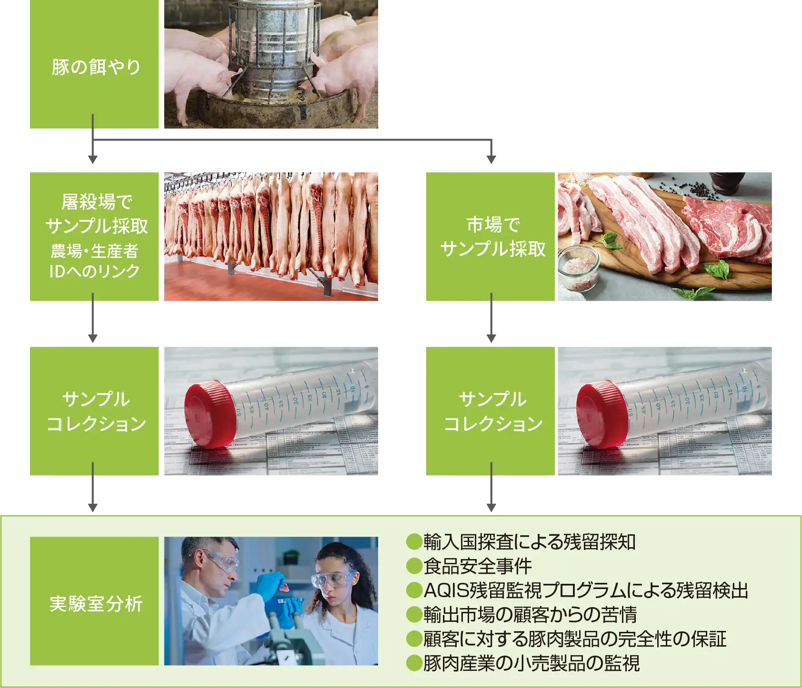

日本流通管理支援機構（株）は偽造防止と、産地証明を行う専門対策会社です。
Prevention and Verification of Origin Misrepresentation
Intellectual property that our ancestors built up has been leaking overseas, causing a loss to our national interest. Applying diamond origin identification technology, we use chemical techniques to digitize unique information about fields and sake breweries. It enables verification even from overseas.
Our technology protects Japanese intellectual property and safeguards the future interests of Japan.
- Discovering differences through DNA testing.
- The clams from Kumamoto Prefecture that became a hot topic on TV were proven to be foreign-made fakes through DNA testing.

- Even if the DNA is the same, it can still be identified.
- By digitizing not only DNA but also information about the environment in which it was raised, it is possible to identify the place of origin.

生産地の土壌や水などCollects specific information and fingerprinting.
It is possible to identify the production area from some parts of the meat and vegetables.
Strategic minerals
Diamond
★It is also possible to conduct a survey on the country of origin for imported goods to Japan.
TECHNOLOGY
Applying diamond mining location identification technology.
By applying provenance identification techniques, we analyze the components contained in products and provide proof of origin for various producers, including farmers, fishermen, miners, and plantations. Our provenance certification solution is effective for both pre-processing and post-processing verification.
- Identifying the location of gold (Au) extraction.
-
Using technology, you can trace the origin of gold and gold products (historical crafts, currency) back to the mines. Even gold that has been cast can be appraised.
-
Collect a sample of gold. Analyze the gold directly with a laser.

Analyzing the gold organization. Measuring the presence of trace contaminants and isotopes.
-
Unique profiles (chemical fingerprints) can be obtained by combining elements and isotopes.
-


First-time data creation
We will propose the optimal plan based on information such as the number of harvests and production areas.

- Inquiry
- Inquiries to our company.

- Hearing
- Crops and produce / Number of fields and region / Annual production volume
Annual production volume, etc.

- On-site investigation sampling
- To obtain soil and environmental information, visit farms and factories for investigation.
-
- Establishment and delivery of fingerprint information.
- Review the information and create map data.
Creation of information for the purpose of comparing and verifying counterfeit items has been completed.


Verification process
If verification is necessary, it is possible to cooperate with agents from each country to respond.
-
- Inquiry
- Inquiries to our company.
-
- Sampling in the target area.
- Sampling in the target country. Send to the lab.
-
- Submission of analysis and report
- Please submit a report and graph like the one on the right.


Seeds and seedlings stolen from Japan and raised overseas, even if they have the same DNA as those produced in Japan.
It will be a revolutionary technology that proves 'not being grown in Japanese land'.
It is possible to provide investigation methods to legitimate importers and importing countries, and to create a mechanism for seizure.
CASE STUDY
［Some examples］
It is a proven technology that has succeeded in overseas seizures, etc.
-
coffee
There are three major production regions worldwide (the graph below visualizes the soil information of the production areas, etc.). It can be seen that each point represents the information of a field and is located close to the respective region. By extracting information from coffee beans, it is possible to identify the origin of the product. Additionally, information is regularly updated every few years to account for natural variations.

-
abalone
The diagram below is a visual representation of the investigation of where abalone was collected from. As a result of investigating domestically produced abalone of unknown origin, we were able to prove which bay the abalone was raised in and also prove that it was fake, with a difference of 5 kilograms.

- wine
Even in the case of alcoholic beverages such as wine, it is possible to determine not only the specific vineyard but also the specific production facility. Overseas, efforts are being made to protect domestically produced brands by certifying the place of origin using scientific technology and preventing the mixing of counterfeit products. In recent years, there have been cases where high-priced Japanese sake bottles are sold in C2C markets and the contents are replaced and sold in Singapore.

-
 pork
porkIn response to the Singapore government's request, we will digitize and verify data on pig farms, feed, slaughterhouses, and other aspects of the market.

SURVEY
DNA + fields and other unique information
We digitize information such as microorganisms and metals contained in the land, creating brand fingerprint data. Not only the DNA of organisms but also environmental information from their growth is digitized, allowing us to verify whether stolen seeds or seedlings, even if they have the same DNA, were produced in Japan or not.

Main things that can be proven.
Strategic minerals
Diamond
★It is also possible to conduct a survey on the country of origin for imported goods to Japan.
Investigable from all over the world
Until now, there was no way to investigate suspicious items when importing from Japan. By collaborating with agents from various countries, it is possible to sample items that are suspected to be counterfeit and make a determination within approximately 7 days.
Please feel free to contact us for any inquiries regarding our services.